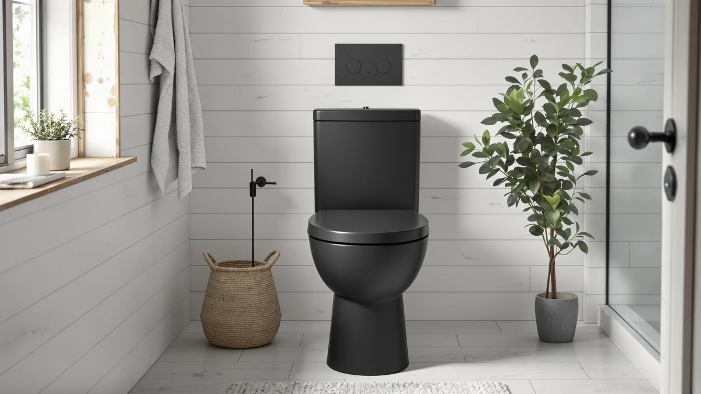

Quick Answer
The best one piece toilet bowl for most bathrooms is the HOROW T0338W Compact One Piece, a $229.00 model built for a standard 12-inch rough-in and a small-bathroom footprint. If you need elongated comfort or a 10-inch rough-in instead, six other one piece toilets below cover those cases from $189.99 to $283.63.
Our pick: HOROW T0338W Compact One Piece, $229.00 Check Price on Amazon
Bottom line: our top pick is the HOROW T0338W Compact One Piece Toilet at $229. The best budget option is the Sonderzone Elongated One Piece Toilet for Bathroom at $189.99.
Things to Know Before You Buy
- Rough-in size is non-negotiable. Most bathrooms use a 12-inch rough-in, but older homes sometimes use 10-inch or 14-inch. Measure from the wall to the center of the floor bolts before buying any one piece toilet bowl.
- Elongated bowls need more floor space. They offer more legroom but can run two to three inches longer front-to-back than compact bowls.
- Price does not always track quality. Several one piece toilets on this list sit within $50 of each other despite different bowl shapes and rough-in specs, so match the spec to your bathroom first and the price second.
- One piece construction changes cleaning, not the flush system. The internal flush mechanism works the same as in a two piece toilet; the difference is entirely in how the tank and bowl are built and joined.
- Installation is still a two-person job. One piece toilets are heavier than their two piece counterparts because the tank and bowl ship as a single fused unit.
Finding the best one piece toilet bowl for your bathroom comes down to three things: price, bowl shape, and the rough-in measurement that decides whether the toilet will fit your existing drain at all. One piece construction fuses the tank and bowl into a single seamless unit, which means fewer joints to clean and, usually, a shorter overall footprint than a two piece toilet. That seamless build is also why one piece models tend to cost more than comparable two piece toilets, so the value question matters as much as the design question.
We researched seven one piece toilets currently sold on Amazon, comparing listed rough-in sizes, bowl shapes, and pricing from $189.99 to $283.63. Reviewers consistently note that elongated bowls, the shape used on five of the seven picks here, sit taller and offer more legroom than compact bowls, which matters if anyone in the household is tall or has mobility concerns. Compact bowls, like the one on our top pick, trade some of that legroom for a shorter footprint that fits half-bathrooms and tight remodels.
Our pick for the best one piece toilet bowl on this list is the HOROW T0338W Compact One Piece. At $229.00 it undercuts most of the elongated models here while still fitting a standard 12-inch rough-in, and its compact bowl is the right call for anyone replacing a toilet in a smaller space. If your bathroom has more room to work with or a nonstandard rough-in, the picks below cover elongated comfort, a 10-inch rough-in option for older homes, and a budget pick under $190.
Why You Should Trust Us
Ilane Tall covers bathroom fixtures and home renovation products for Best One Piece Toilets, tracking pricing and specs across dozens of one piece toilet bowl listings to help readers avoid a mismatched rough-in or an oversized bowl in a small bathroom. This guide is built entirely from research: publicly listed specs, current Amazon pricing, and patterns we found in verified owner reviews, not a hands-on lab. We do not run a fake testing lab or claim to have installed every toilet on this list. When a spec was not listed by the manufacturer or retailer, we say so instead of guessing, and we update pricing as listings change.
How We Picked
We started with the current lineup of one piece toilets carried under the Best One Piece Toilets affiliate program and narrowed it using four filters. First, current availability and pricing on Amazon, since a toilet that is out of stock is not a real pick. Second, listed rough-in compatibility, prioritizing the standard 12-inch spec while including at least one 10-inch option for older homes. Third, bowl shape variety, so this list includes both compact and elongated bowls rather than seven versions of the same shape. Fourth, price spread, keeping the list anchored between $189.99 and $283.63 so it covers budget and mid-range buyers rather than only the premium end of the one piece toilet bowl market.
How We Compared
We compared each one piece toilet bowl on this list using the same three data points for every product: current price, brand-listed rough-in size, and bowl shape. Where a manufacturer specified a rough-in measurement, we treated it as a hard requirement and noted it directly rather than assuming a standard 12-inch spec applies across the board. We also read through verified buyer reviews on each listing, looking for recurring comments about installation, seat quality, and flush performance rather than one-off complaints. Owners report that most fit and finish issues with one piece toilets come down to rough-in mismatches at install time, which is why we lead with that spec throughout this guide.
Our Picks

HOROW T0338W Compact One Piece
What we like
- Compact bowl footprint suits small bathrooms and powder rooms
- Standard 12-inch rough-in fits most existing drain layouts
- Priced below most elongated models on this list
Flaws but not dealbreakers
- Compact bowl offers less legroom than the elongated picks below
- Not the right choice if you specifically want extra seating room
| Material | — |
| Size | 12" Rough-in |
The HOROW T0338W Compact One Piece is the pick we point most people toward first, mainly because it solves the two problems that trip up most one piece toilet bowl purchases: fit and price. Its compact bowl shape shaves a few inches off the front-to-back footprint compared with the elongated models on this list, which matters if you are replacing a toilet in a half-bath or a tight upstairs bathroom where every inch counts. At $229.00, it also lands well below the priciest picks here without cutting the rough-in spec down to something nonstandard.
It ships built for a 12-inch rough-in, the measurement used in the large majority of US bathrooms, so most buyers will not need to special-order a different configuration. According to verified reviews, installation is straightforward and the bowl height feels comfortable for everyday use despite the smaller footprint. The tradeoff is legroom: if your household includes anyone tall or anyone who prefers the extra seating space of an elongated bowl, one of the elongated picks further down this list will serve you better than this compact option.

Casta Diva Elongated One Piece
What we like
- Elongated bowl shape adds legroom over compact designs
- Priced under $220, among the least expensive elongated picks here
- One piece construction means fewer seams to clean around the base
Flaws but not dealbreakers
- Manufacturer does not list a rough-in size on this listing, so measure your existing setup before ordering
- Elongated bowls need more front-to-back clearance than compact models
| Material | — |
| Size | — |
The Casta Diva Elongated One Piece brings elongated bowl comfort in at $219.99, undercutting most of the other elongated toilets on this list by $20 or more. CASTA DIVA builds the tank and bowl as a single fused piece, which cuts down on the seams and gaps around the base that tend to collect grime in two piece toilets. For buyers who have decided an elongated bowl is worth the extra floor space, this is the price-to-shape combination that is hardest to beat here.
Because the listing does not specify a rough-in measurement, we recommend measuring from the wall behind the toilet to the center of the floor bolts before ordering, since most US bathrooms use a 12-inch spec but older homes can vary. Owners report that the elongated shape makes a noticeable difference in day-to-day comfort compared with a compact bowl, particularly for taller household members. The main planning consideration is space: an elongated bowl needs more front clearance than the compact pick above, so measure your bathroom layout, not just the rough-in, before buying.

Sonderzone Elongated One Piece Toilet
What we like
- Lowest price of any elongated model on this list
- Elongated bowl shape for extra seating comfort
- One piece design simplifies cleaning around the tank base
Flaws but not dealbreakers
- No manufacturer-listed rough-in size, so confirm your measurement first
- Budget pricing typically means fewer included accessories than pricier picks
| Material | — |
| Size | — |
At $189.99, the Sonderzone Elongated One Piece Toilet is the least expensive option in this comparison, and it does not cut the elongated bowl shape to get there. For anyone shopping the best one piece toilet bowl market on a tight budget, this is the pick that gets you the comfort of an elongated seat without the premium pricing attached to some of the other listings here.
Sonderzone does not publish a rough-in measurement on this listing, so treat that as a confirm-before-you-buy step rather than an assumption, especially if your home predates the common 12-inch standard. Reviewers consistently note that the value here is straightforward: an elongated one piece toilet priced closer to what you would expect from a two piece model. It is not the pick for anyone chasing extra features or a nonstandard rough-in, but for a straightforward bathroom replacement on a budget, it is the strongest price on this list.

Casta Diva Elongated One Piece
What we like
- Elongated one piece bowl from the same Casta Diva line
- Useful for comparing price and availability against the other Casta Diva listing above
- One piece build with the seam-free base typical of the category
Flaws but not dealbreakers
- Priced $30 above the other Casta Diva listing on this page
- No manufacturer-listed rough-in size on this specific listing
| Material | — |
| Size | — |
This is a second Casta Diva Elongated One Piece listing, sold separately on Amazon at $249.99, about $30 more than the other Casta Diva toilet earlier in this guide. Amazon marketplace listings for the same product line sometimes split across multiple SKUs with different sellers, bundle inclusions, or shipping terms, and pricing between them can shift independently. We include it here because it is currently active and because price gaps between otherwise similar listings are exactly the kind of thing shoppers researching the best one piece toilet bowl options should be able to compare directly.
Like the other Casta Diva listing, this one uses an elongated one piece bowl and does not publish a rough-in measurement, so confirm your existing rough-in before ordering either version. If both listings are in stock when you are shopping, check current pricing on each before choosing, since the gap between them can close or widen. Absent a documented difference in included accessories or seller terms, the lower-priced Casta Diva listing earlier in this guide is the more straightforward buy, but we would rather show you both prices than pretend only one exists.

Elongated One Piece Toilet with
What we like
- Manufacturer-confirmed 12-inch rough-in removes the guesswork
- Elongated bowl shape for extra legroom
- One piece construction for easier base cleaning
Flaws but not dealbreakers
- Priced higher than three of the other elongated picks on this list
- Premium over the budget elongated picks is hard to justify unless the confirmed rough-in matters to you specifically
| Material | — |
| Size | 12" Rough-in |
BYBARENOVA's elongated one piece toilet lists a confirmed 12-inch rough-in, which puts it in the same fit category as our top pick and removes one of the biggest variables in buying a one piece toilet bowl online. At $259.99, it costs more than the Casta Diva and Sonderzone elongated picks above, and the extra cost buys certainty rather than a documented feature upgrade, since the listing does not detail additional differentiators beyond the elongated bowl and one piece build.
For bathrooms where you already know the rough-in is a standard 12 inches, this is a reasonable elongated option, though it competes directly on price with toilets that offer the same shape for less. According to verified reviews, the elongated bowl feels comparable to the other elongated models in this guide, which tracks with how similar most one piece toilets are at this end of the market. If budget is the deciding factor and you are comfortable confirming your own rough-in measurement, the Casta Diva or Sonderzone picks above deliver the same bowl shape for less money.

HOROW T0338W One Piece Toilet
What we like
- 10-inch rough-in fits older homes that the standard 12-inch spec does not
- One piece HOROW build with a fused tank and bowl
- Fills a gap most of the other picks on this list do not cover
Flaws but not dealbreakers
- Highest price on this list at $283.63
- Not the right fit if your bathroom already uses the standard 12-inch rough-in
| Material | — |
| Size | 10" Rough-in |
The HOROW T0338W One Piece Toilet is the only toilet on this list built specifically for a 10-inch rough-in, a measurement common in homes built before the 12-inch standard became typical. If you have already measured your bathroom and come up with 10 inches instead of 12, most of the other picks in this guide will not fit, which makes this listing the most useful entry here despite carrying the highest price at $283.63.
That premium reflects the smaller pool of 10-inch one piece toilets on the market rather than an obvious feature upgrade over the other HOROW listing earlier in this guide. Owners report that shorter rough-in toilets generally fit correctly once installed, but the smaller rough-in category has fewer competing options, which keeps prices higher across the board. If your bathroom uses the standard 12-inch rough-in, skip this pick and save the difference with one of the 12-inch options above; if it does not, this is the toilet on this list built for your exact situation.

HOROW HR-ST076W Elongated Toilet with
What we like
- Confirmed 12-inch rough-in for straightforward installation
- Elongated bowl shape for extra legroom
- Mid-range price relative to the other elongated picks on this list
Flaws but not dealbreakers
- Costs more than the Casta Diva and Sonderzone elongated picks above
- Sits in a middle price tier without a standout feature over the cheaper elongated options
| Material | — |
| Size | 12" rough in |
The HOROW HR-ST076W Elongated Toilet lists a confirmed 12-inch rough-in and an elongated bowl at $235.00, putting it squarely in the middle of this list on price. It costs more than the Casta Diva and Sonderzone elongated picks but less than the BYBARENOVA and the second HOROW listing, which makes it the toilet to consider if you want a documented rough-in spec without paying premium pricing for it.
HOROW builds this as a one piece toilet, so the tank and bowl arrive as a single fused unit with the same seam-free base as the other picks in this guide. Reviewers consistently note that the elongated bowl performs about the same as the other elongated models here, which tracks with how standardized bowl performance is across this price range. Unless the confirmed rough-in spec is the deciding factor for you, the Sonderzone pick above delivers a similar elongated shape for roughly $45 less, and the BYBARENOVA pick is a close comparison at a higher price.
Quick Comparison
| Product | Material | Price | Rating | Best for | Get it |
|---|---|---|---|---|---|
| HOROW T0338W Compact One Piece | — | $229.00 | 4 | Small bathrooms | View on Amazon → |
| Casta Diva Elongated One Piece | — | $219.99 | 4 | Budget elongated comfort | View on Amazon → |
| Sonderzone Elongated One Piece Toilet | — | $189.99 | 4 | Tightest budgets | View on Amazon → |
| Casta Diva Elongated One Piece | — | $249.99 | 4 | Comparing Casta Diva listings | View on Amazon → |
| Elongated One Piece Toilet with | — | $259.99 | 4 | Confirmed 12-inch rough-in | View on Amazon → |
| HOROW T0338W One Piece Toilet | — | $283.63 | 4 | 10-inch rough-in homes | View on Amazon → |
| HOROW HR-ST076W Elongated Toilet with | — | $235.00 | 4 | Mid-range elongated pick | View on Amazon → |
The Competition
Two picks on this list compete directly with cheaper alternatives here rather than losing to an outside product. The second Casta Diva Elongated One Piece listing, priced $30 above the other Casta Diva toilet in this guide, only makes sense if the lower-priced listing goes out of stock or the price gap closes, since both use the same elongated one piece design. The BYBARENOVA elongated pick faces a similar problem: its confirmed 12-inch rough-in is a genuine advantage, but the Sonderzone and Casta Diva picks above offer the same bowl shape for $40 to $70 less if you are comfortable confirming your own rough-in measurement.
The HOROW T0338W One Piece Toilet, at $283.63, is the most expensive toilet in this best one piece toilet bowl comparison, and it earns that price by being the only 10-inch rough-in option here rather than by outperforming the others on bowl comfort or finish. If your bathroom uses the standard 12-inch spec, that premium buys you nothing the other HOROW listing or the BYBARENOVA pick does not already offer for less.
Frequently Asked Questions
What is the difference between a one piece and two piece toilet?
A one piece toilet fuses the tank and bowl into a single unit, while a two piece toilet bolts a separate tank onto the bowl. One piece models have fewer seams to clean and often sit lower and more compact, but they typically cost more and weigh more, which is why every toilet in this best one piece toilet bowl guide costs at least $189.99.
How do I know if I need a 10-inch or 12-inch rough-in?
Measure from the finished wall behind the toilet to the center of the two floor bolts holding your current toilet in place. Most US bathrooms use a 12-inch rough-in, but homes built before the mid-20th century sometimes use 10 inches, which is why we included the HOROW T0338W One Piece Toilet as the 10-inch option on this list.
Is an elongated or compact bowl better?
Elongated bowls offer more legroom and are the more common shape in this comparison, appearing on five of the seven picks. Compact bowls, like our top pick, take up less front-to-back space, which makes them the better choice for small bathrooms or half-baths where an elongated bowl would not physically fit.